벨기에 이야기 (5) - 제해권과 환어음
게시: 2026-08-10T06:30:35+09:00
지난 편에서 말씀드린 대로, 영국에서 쫓겨나 갈 곳이 없어진 판 데르 마르크의 바다 거지 6백여 명을 실은 25척의 함대는 처음엔 블리싱언(Vlissingen)으로 가려고 했으나 바람의 방향이 맞지 않아 역풍에 밀려 남부 홀란드(Holland) 앞바다까지 오게 되었습니다. 어차피 식량이 다 떨어져 뭐든 해야 하는 상황이었으므로, 판 데르 마르크는 이 해안 일대에서 노략질이라도 하려고 했었습니다. 사실 바다 거지들은 스페인 선박들만 털던 것이 아니라 저지대 해안 마을들을 터는 경우도 꽤 많았거든요. 그렇게 또 바이킹처럼 해안 마을을 약탈하러 슬금슬금 해변으로 접근하고 있을 때, 작은 고기잡이 보트 하나가 겁도 없이 이 바다 거지 함대에게 접근했습니다. 거기엔 흥분한 늙은 어부가 타고 있었는데, 그가 전해준 말은 놀라운 것이었습니다. 라인강의 많은 분류 중 하나인 니우어마스(Nieuwe Maas)강 안쪽에 위치한 브릴러(Brielle)의 스페인 수비대가 70km 정도 떨어진 위트레흐트(Utrecht)의 폭동을 제압하러 떠났기 때문에, 브릴러를 지키는 군대가 전혀 없다는 소식이었습니다.
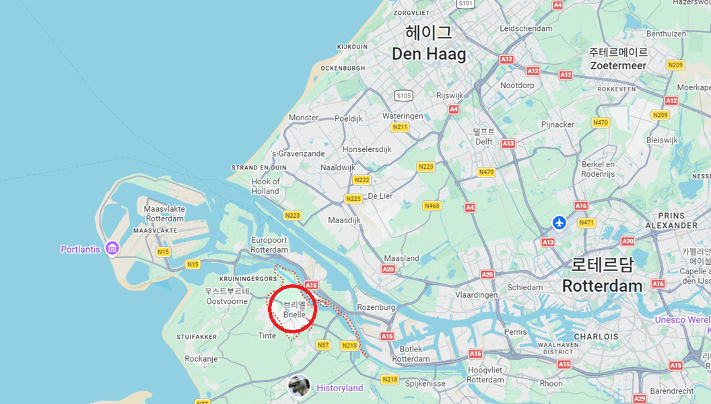
(브릴러(Brielle)는 니우어마스 강 안쪽 깊숙한 곳에 자리 잡은 작은 도시입니다. 지금도 인구 1만8천이 안 되는 작은 도시입니다.)
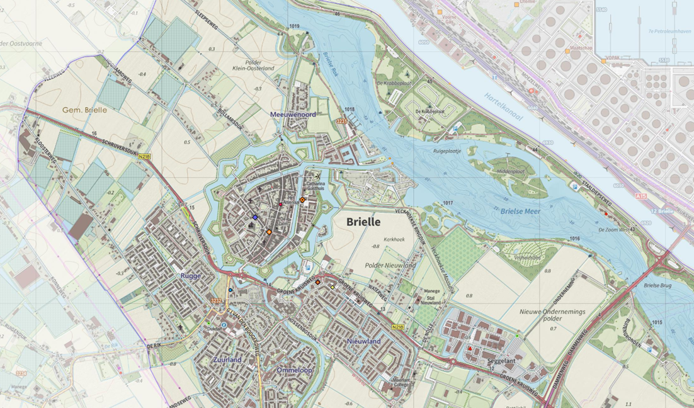
(현대의 브릴러의 지도입니다. 원래는 저 보방식 별 모양 요새 속의 마을만 있었겠지요.)
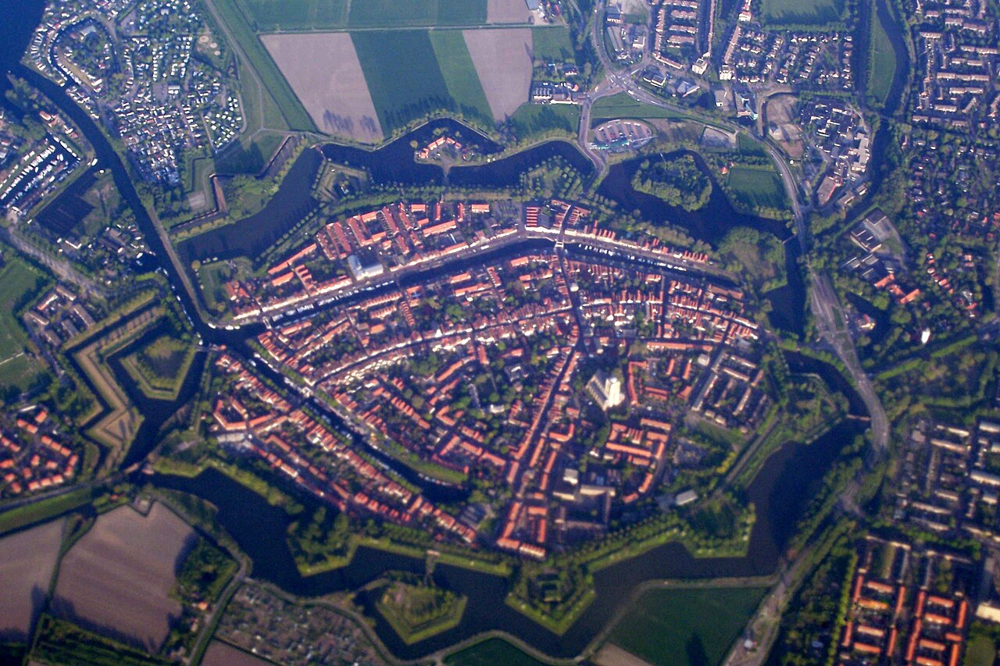
(현대의 항공 사진입니다. 도시 전체가 저렇게 보방식 성벽으로 둘러싸여 있고, 니우어마스 강과 연결된 수로가 도시 안쪽까지 연결되어 있습니다.) 대체 그 늙은 어부는 이 배고픈 바다 거지들에게 뭘 기대하고 그런 소식을 전해줬는지 모르겠습니다만, 그 소식을 들은 바다 거지들은 얼씨구나 즉각 브릴러에 상륙하여 무혈 점령 후, 식량과 술, 돈과 귀중품을 약탈하기 시작했습니다. 이들은 여태까지 하던 대로, 서둘러 한몫 챙긴 뒤 도망치려 했던 것이지요. 그런데 그들 중 누군가가 한 마디 했습니다. "어차피 갈 곳도 없는데 그냥 여기 그냥 있으면 안 돼?" 생각해보니 정말 그랬습니다. 브릴러는 작지만 바다로 곧장 나갈 수 있는 항구였고, 식량도 충분했고, 주민들도 신교를 믿어 저지대 독립이라는 대의에 호의적이었고, 무엇보다 보방(Vauban)식 성벽을 갖춘 요새 도시라서, 나중에 스페인 수비대가 돌아오더라도 얼마든지 버틸 수 있었던 것입니다. 그들은 거기에 눌러 앉기로 합니다. 그때가 1572년 4월 1일이었습니다.
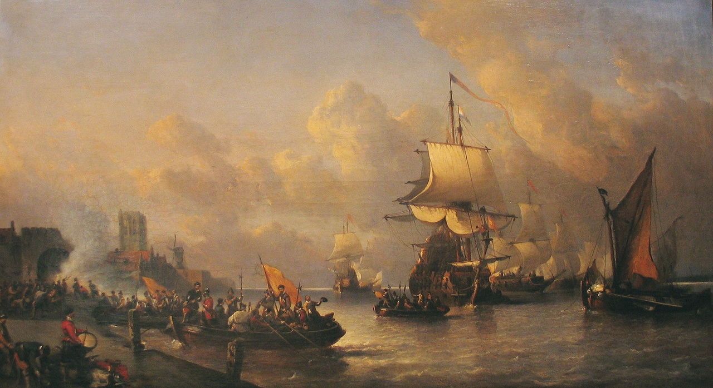
(브릴러의 함락을 묘사한 19세기 후반의 작품입니다. 그러니까 저기 보이는 배들은 바다가 아니라 니우어마스 강 위에 떠있는 것입니다. 가만 보면 강물이라서 파도가 매우 잔잔한 것을 알아차리실 수 있습니다.)
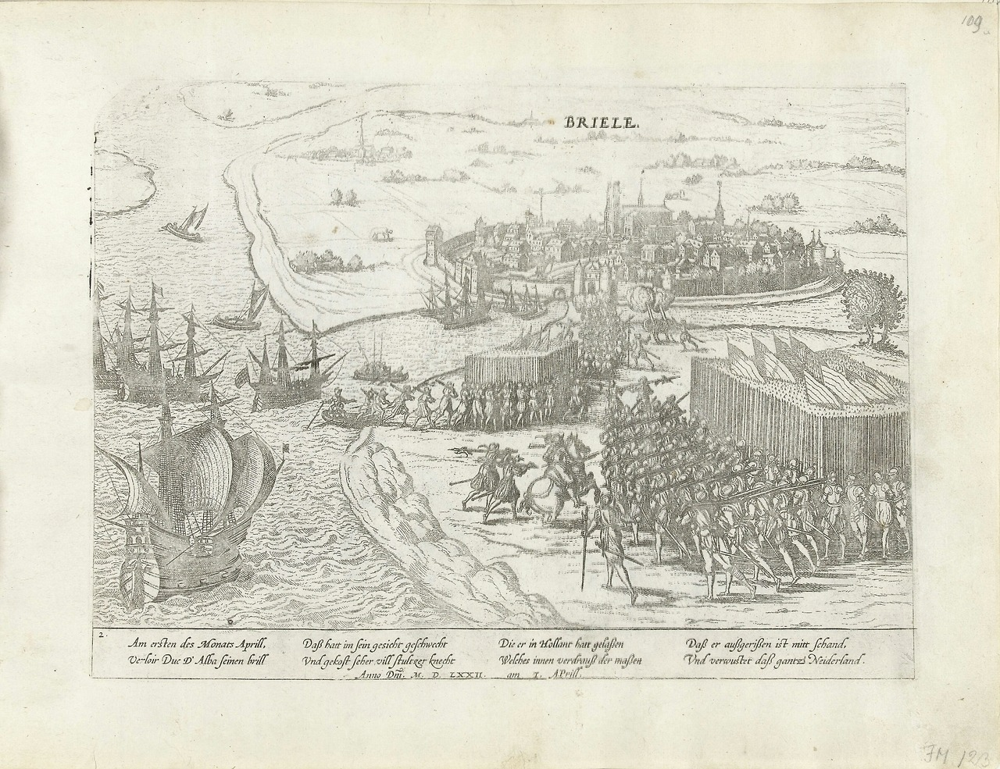
(브릴러의 함락을 묘사한 다른 판화입니다.) 이 사건은 '4월 1일, 알바 공작은 안경을 잃었다' (Op 1 april verloor Alva zijn bril. 이건 안경을 뜻하는 네덜란드어 bril과 브릴러라는 도시 이름이 비슷한 것에 착안한 조롱입니다)라는 농담으로도 유명하지만, 네덜란드 독립에 있어 매우 중대한 전환점이 되는 사건이었습니다. 원래 네덜란드가 독립하게 되는 과정에서 겪은 전쟁을 네덜란드 독립전쟁이라고 부르지 않고 '80년 전쟁'이라고 부르는 이유는, 비록 벨기에는 독립에 실패했지만 벨기에도 그 전쟁에서 열심히 싸웠기 때문이었습니다. 그렇지만 80년 전쟁이라는 이름도 논란이 좀 있습니다. 애초에 이 전쟁이 언제부터 시작된 것이냐에 대해 이견이 많기 때문입니다. 일반적으로는 참패로 끝난 빌럼 오라녜의 제1차 침공이 있었던 1568년을 전쟁 시작 연도로 보긴 하지만, 사실 빌럼 오라녜의 제1차 침공은 차라리 안 하느니만 못한 결과만 낳았을 뿐이었습니다. 그러나 진짜 저지대의 반란이 자리를 잡고 본격화된 것이 1572년 브릴러의 함락이라는 것에 대해서는 논란이 없습니다. 왜냐하면 이 우연히 얻은 작은 승리의 소식이 퍼지자 저지대 전체가 마치 억눌러왔던 봇물이 터지듯 반응했기 때문이었습니다.
(브릴(bril)이 네덜란드어로 안경이라는군요?) 1571년부터 시작된 알바 공작의 10분의 1세(Tiende Penning) 때문에 팽배했던 저지대의 불만에도 무장 봉기가 일어나지 않았던 것은 그저 계기가 없었고 스페인군이 워낙 막강했기 때문이었는데, 브릴러 함락 소식이 사람들에게 용기를 준 것입니다. 판 데르 마크가 원래 목표로 했던 블리싱언도 이 사건 이후 한 달도 지나지 않아 반란군 편으로 돌아섰고, 이어 3개월 안에 엥크하위전(Enkhuizen), 호른(Hoorn), 알크마르(Alkmaar), 하를럼(Haarlem)과 발허런(Walcheren) 섬 등등이 줄줄이 반란 대열에 합류했습니다. 실은 이는 제해권이 없이 저지대를 제압하는 것이 얼마나 어려운지에 대한 반증이라고 할 수 있습니다. 아무리 스페인군이 강하고 숫자가 많더라도, 모든 도시를 일일이 다 지킬 수는 없습니다. 위에서 열거한 반란 도시들은 모두 해안 가까운 곳에 위치한 곳으로서, 바다를 장악한 바다 거지들은 선박의 기동성을 이용하여 스페인군이 많은 병력을 배치할 수 없었던 곳들만 쏙쏙 점령했던 것입니다.
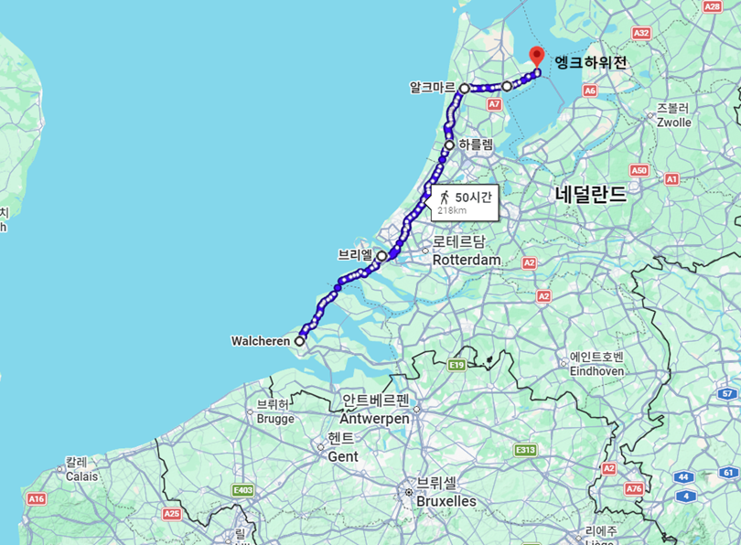
(저 위에 열거된 1572년 반란 참여 도시들을 연결하면 대략 분위기 파악이 되실 것입니다. 모두 해안 도시들입니다.) 물론 알바 공작은 보복에 들어갔고, 스페인군은 주트펀(Zutphen), 나르덴(Naarden), 하를럼(Haarlem) 등을 차례로 봉쇄하고 함락시킨 뒤, 항복한 시민과 병사들까지 잔혹하게 학살하며 본보기를 보였습니다. 알바 공작의 목표는 저지대 주민들에게 공포를 퍼뜨려 굴복시키는 것이었습니다. 그러나 저지대 사람들은 세계적으로 유명한 수전노였습니다. 그들은 세금을 내느니 죽겠다며 오히려 결사항전 의지를 다졌습니다. 작고 좁은 저지대가 크고 넓은 스페인에 대항하는 것이 쉽지 않았지만, 저지대 사람들은 저지대라는 지리적 특성을 십분 활용했습니다. 1573년 알크마르(Alkmaar) 포위전에서 시민과 반란군은 둑을 터뜨려 바닷물을 들여보내는 배수진을 쳤고, 스페인군은 끝내 알크마르를 점령하지 못한 채 후퇴했습니다. 뒤이어 1574년 레이던(Leiden) 포위전 역시 해방군이 둑을 무너뜨려 배를 타고 도시로 진격하는 기상천외한 전략으로 스페인군의 포위를 풀었습니다. "알크마르에서 승리가 시작된다"라는 네덜란드 속담이 생겨날 정도로, 스페인 불패의 신화는 북부 습지대에서 서서히 균열을 일으키고 있었습니다. 하지만 1573년까지도 반란에 동참한 저지대 지방은 홀란드(Holland)와 제일란드(Zeeland) 2개뿐이었고, 여전히 저지대 대부분은 스페인에 충성하고 있었습니다. 아무리 신교-구교간의 갈등이 있고 세금이 싫다고 하더라도, 당대 유럽 최강 국가였던 스페인에게 반란을 일으킨다는 것은 가장 큰 시장과 돈줄을 잃는 것이었으니까요. 게다가 오늘날 벨기에에 해당하는 남부는 원래 카톨릭이 훨씬 더 많았고, 네덜란드에 해당하는 북부에도 개신교가 세를 늘려가고는 있었지만 아직 카톨릭 신자들도 매우 많았습니다. 이건 단순히 다른 저지대 지방들이 반란에 무관심하다는 의미에 그치지 않았습니다. 나머지 저지대 지방들은 홀란드와 제일란드를 적대시하고 스페인군을 지원했던 것입니다.
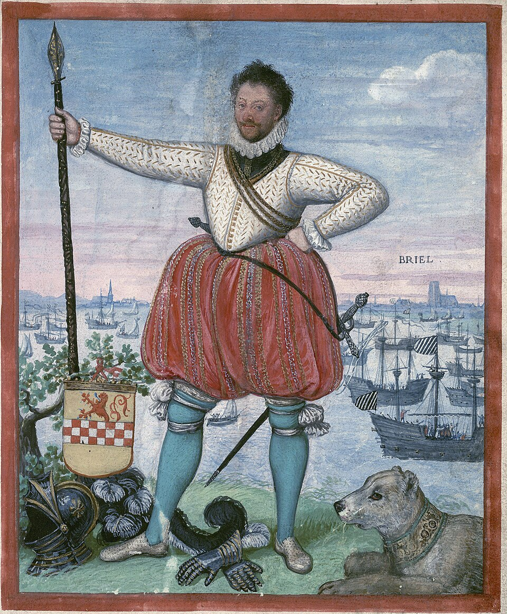
(전체 저지대가 반란에 동참하지 않은 것에는 다 이유가 있습니다. 가령 브릴러의 점령이라는 엄청난 공을 세운 판 데르 마르크도 그 이유 중 하나가 되었습니다. 그는 연이어 점령한 고르쿰(Gorkum) 마을에서 붙잡은 카톨릭 사제들을 마구 폭행하고 고문하며 신교로의 개종을 강요했고, 그들이 끝내 거부하자 빌럼 오라녜가 직접 편지를 보내 금지했음에도 불구하고 카톨릭 사제 19명을 수도원 마구간 대들보에 목을 매달아 살해했습니다. 그런 상황에서 저지대 카톨릭 신자들이 반란에 동참하기 쉽지 않았을 것입니다. 판 데르 마르크도 고르쿰에서의 학살 등등의 이유로 결국 쫓겨나 고향인 리에쥬로 돌아갔다가 거기서 불분명한 이유로 사망했습니다.)
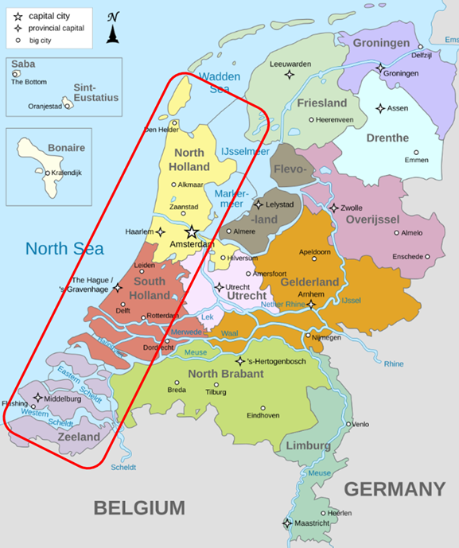
(1573년 당시 반란의 기치를 들고 있던 것은 네덜란드 중에서도 홀란드와 제일란드뿐이었습니다. 네덜란드를 영어로 홀랜드라고 부르는 경우가 많은데, 이유는 홀란드가 가장 크기도 하지만 네덜란드 독립 당시 가장 활발하게 싸웠기 때문이기도 합니다. 제일란드(Zeeland)의 이름을 보면 뉴질랜드(New Zealand)를 연상하지 않을 수 없는데, 실제로 이 제일란드에서 따온 이름입니다. 원래 뉴질랜드를 최초로 발견한 것이 네덜란드 동인도 회사의 선박이라서, 그 땅을 '새로운 제일란드'라고 불렀던 것입니다.) 하지만 이 전쟁의 시작이 돈이었듯이, 결국 지리보다는 돈이 전쟁의 방향을 바꿨습니다. 스페인 국왕 펠리페 2세는 저지대의 반란뿐만 아니라 지중해에서 벌어진 오스만 제국과의 전쟁 등 전 세계에서 동시다발적으로 벌이던 전쟁으로 인해 엄청난 재정난에 시달리고 있었습니다. 결국 1575년 9월, 스페인 왕실은 두 번째 채무 불이행을 선언했습니다. 사실 이건 펠리페 2세의 영토인 이탈리아 제노바 은행에서 빌렸던 단기 융자에 대한 부도 선언이었는데, 이것이 저지대에 주둔해 있던 스페인군에게 직격탄을 날렸습니다. 스페인 테르시오(tercio) 부대원들은 스페인이나 이탈리아 외에도 프랑스 독일 등 다양한 나라 사람들을 모은 용병들이었는데, 스페인 사람이건 이탈리아 사람이건 당연히 병사들에게는 돈을 주어야 했습니다. 그런데 펠리페 2세가 부도를 선언하자 그 급여 지급이 일괄 중단되었습니다. 아무리 채무 불이행이 선언되더라도 세금을 안 걷는 것도 아니고 남아메리카 은광에서는 끊임없이 은괴가 들어오고 있었습니다. 그런데도 병사들 급여 지급이 중단되었다는 것은 언듯 이해가 안 갈 수 있습니다. 여기에는 당시 유럽 금융 시스템과 함께 역시 또 제해권 문제가 있었습니다. (생각해보면 현대의 스페인 제국인 미국도 제조업은 중국에게 내주더라도 금융과 제해권, 이 두 가지를 꽉 쥐고 있지요.)
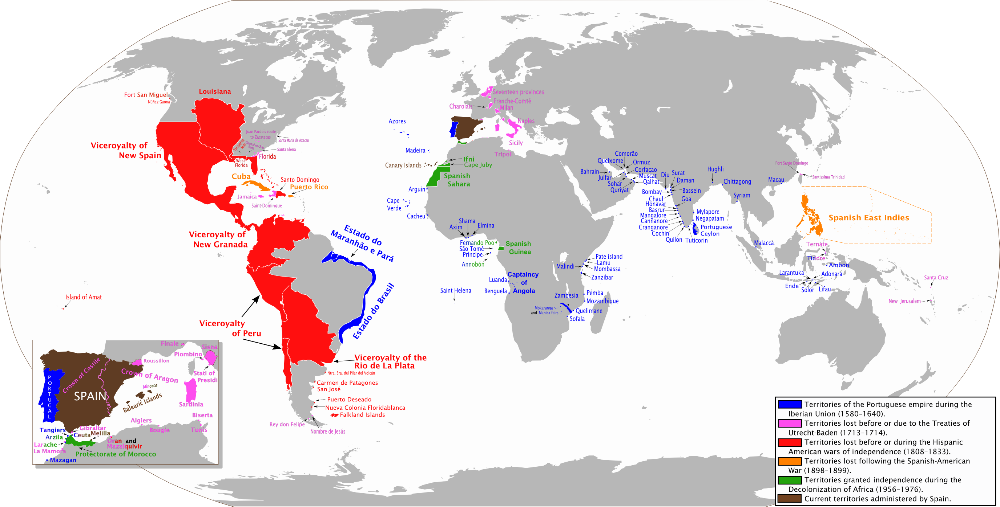
(1575년 스페인의 부도 선언은 남아메리카 은광으로부터 배만 한 척 제대로 카디즈에 입항하면 다 해결될 수 있는 것이었습니다. 아무리 그래도 그렇지 저렇게 광대한 영토를, 그것도 세계에서 가장 큰 포토시 은광을 포함한 영토를 가지고 있던 스페인이 진짜 망했겠습니까? 그러나 그런 부자도 대서양에서 풍랑이 심해 배가 좀 늦게 들어오는 바람에 잠깐 돈이 없으면 순식간에 부도가 나는 법입니다.) 당시 돈이 가장 많은 곳 중의 하나가 바로 저지대였고 저지대는 스페인의 영토였습니다. 그러니 저지대에 파병된 테르시오 부대에게 지급할 급여를 굳이 스페인에서 마차와 나귀, 선박을 이용하여 저지대까지 보낼 이유가 전혀 없었습니다. 스페인 정부는 그저 제노바 등의 은행에서 받은 환어음(bill of exchange) 한 장을 저지대로 보내기만 하면 되었습니다. 그 문서를 받은 알바 공작은 그걸 안트베르펜이나 암스테르담의 은행에 넘기고 (아마도 할인된 가격으로) 은화를 인출하여 병사들 급여로 나눠주면 되었습니다. 나중에 제노바 및 안트베르펜 은행들은 스페인 정부와 그 금액을 정산하면 되었고요. 그게 바로 신용이고 금융 시스템이지요.
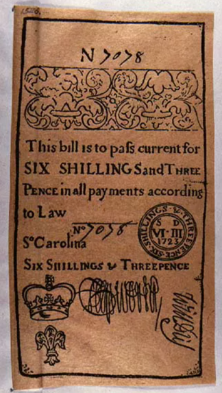
(은행들은 모든 거래에 대해 큼직한 수수료를 떼어가기 때문에 언제 무슨 상황에서도 쉽게 돈을 버는 것 같습니다. 그러나 그런 시스템을 구축하고 운용하는 것에는 많은 노력과 책임이 따르는 것도 사실이지요. 이 사진은 18세기 초 영국 식민지이던 북미 사우스 캐롤라이나에서 현금 대신 통용되던 환어음입니다. 6쉴링 3펜스짜리네요.) 그런데 그 신용이라는 것이 바로 스페인 정부의 지급 능력이었는데, 스페인 정부가 지불 중단을 선언하자 금융 시스템이 무너져 내렸습니다. 제노바 은행도 안트베르펜 은행도 스페인 정부에게 환어음 발행과 접수를 거부했습니다. 그러면 남은 방법은 스페인 재무부 금고에 있는 은화 궤짝을 군함에 싣고 스페인 카디즈(Cadiz) 항구에서 출발하여 저지대 안트베르펜 항구로 직접 운송하는 것이었습니다. 그러자면 제해권이 있어야 했는데... 스페인에게는 그게 없었습니다. 그때 즈음부터 맹활약을 시작한 영국 해적 드레이크는 물론, 저지대 바다 거지들의 행패 때문에 그런 해상 운송은 매우 위험했습니다. 가령 1568년, 스페인군에게 전달될 40만 플로린(florin, 현재 가치로 대략 1,500억원)을 실은 스페인 수송선단이 풍랑을 피해 영국 항구에 입항했을 때, 그 금화는 엘리자베스 1세의 영국 정부에 의해 압수되고 말았습니다.
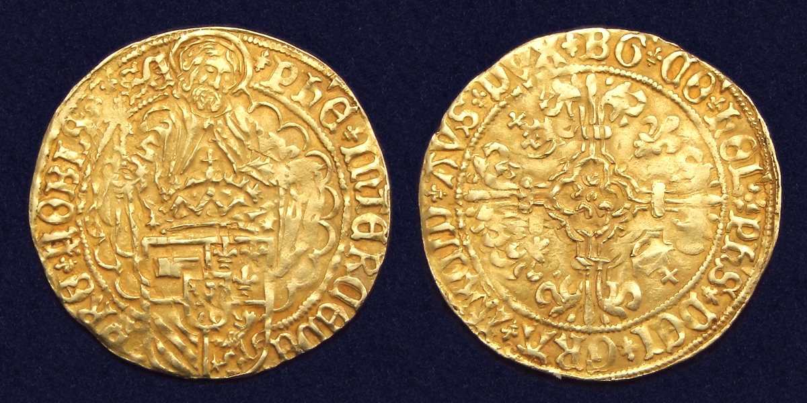
(15세기 말 합스부르크 저지대의 군주이자 스페인의 첫 합스부르크 국왕인 펠리페 1세 때 저지대 도르드레흐트(Dordrecht)에서 주조된 필리푸스 굴덴 금화(Philippus goudgulden), 즉 플로린(florin) 금화입니다. 플로린 금화의 가치는 어느 시대에 주조된 것인가에 따라 금 함량이 다 다르긴 하지만, 대략 금화 하나에 3.5g의 금을 함유하고 있었습니다.) 이렇게 급여가 끊기자 저지대에 파병된 스페인군에게는 어떤 일이 벌어졌을까요? Source : https://en.wikipedia.org/wiki/William_II_de_La_Marck https://en.wikipedia.org/wiki/Eighty_Years%27_War https://en.wikipedia.org/wiki/Capture_of_Brielle https://en.wikipedia.org/wiki/Brielle https://en.wikipedia.org/wiki/Provinces_of_the_Netherlands https://en.wikipedia.org/wiki/Nieuwe_Maas https://en.wikipedia.org/wiki/Florin https://en.wikipedia.org/wiki/Sack_of_Antwerp https://www.knowitall.org/photo/bill-exchange-history-sc-slide-collection https://www.reddit.com/r/MapPorn/comments/3m1yal/anachronous_extent_of_the_spanish_empire_2752_x/